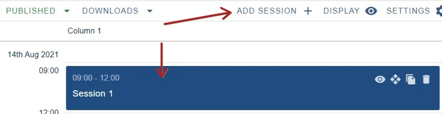
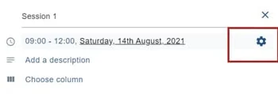
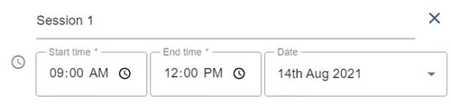
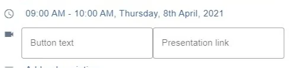
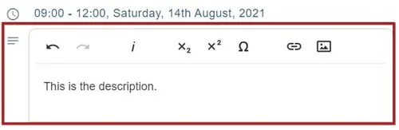
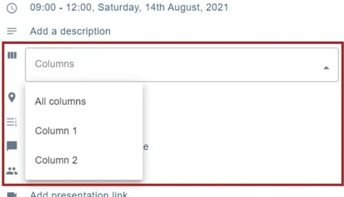
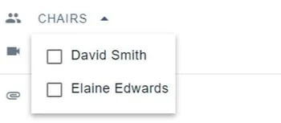
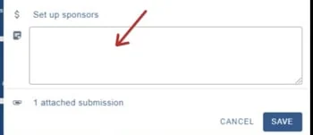

Creating a session
For event organisersNot an organiser?
After you have set up your online program settings, you can create a session.#
NB: Go to Event dashboard → Conference → Program ➞ Builder
You can create a session by clicking on the default session or, to add a new session, click Add Sessionbutton.
NB: The default session will only show if you have added a start date in Event details.
.

The session control panel will open up.
| 1 Session name 2) Dates 3) Add presentation link 4) Description 5) Column 6) Locations 7) Add tracks 8) Presentation type 9) Session chairs 10) Sponsors 11) Admin notes 12) Mark as a recommended session 13) Attach symposia |
NB: When you hover on some of these details, you will notice a settings icon. Click on this to access the Configuration settings.

1) Session name
Click in the field to add a name.
2) Dates
Click on Start time, End Time and Date to enter your choices
NB - the dates are automatically pulled from the event details.

3) Presentation link
This field is for entering a video link.
Simply add the text you want to appear on the button, and the link itself.

4) Description
Click to add a description.

5) Column 6) Locations, 7) Tracks and 8) Presentation types**
Make your choices from the dropdown menu. In all these cases, choose just one.

9) Session chairs
Make your choices - you can click on as many as you require.

11) Admin notes
You can add notes here - these will be seen by any other admin.

Ensure you click the SAVE button when you have made your changes.

Did this page solve it?
Thanks — this helps us fix it.
Didn't solve it? Ask our support team
No question is too small, and there's no charge for asking. Raise a ticket and someone who knows the software will pick it up.